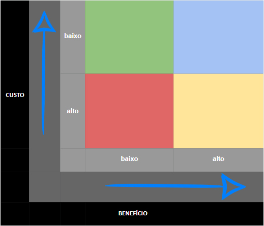

Custo x Beneficio
1. Introdução
Esse método de priorização de projetos é o mais fácil de compreender, afinal, muitas pessoas já estão familiarizadas com o termo “custo x benefício”. Nesse caso, a matriz ajuda a esclarecer qual o valor de um projeto e a relação disso com o resultado esperado do projeto. Para fazer esse balanço, utilizamos uma matriz dividida por cores e quadrantes, como mostra a figura 1:

Com a matriz custo x benefício não é preciso calcular nada, apenas pegar os dados previstos para o seu projeto e encaixá-los nos quadrantes coloridos.
A lógica das cores nesse método, é:
- Vermelho: representa o pior resultado possível, com custo elevado e baixo retorno;
- Amarelo: mostra um resultado intermediário, em que o custo e o benefício são considerados ok;
- Verde: se trata de um projeto com baixo custo, mas que não trará muitos benefícios;
- Azul: é a melhor das opções, pois representa os melhores resultados possíveis para um projeto.
2. Histórico de Versão
| Data | Versão | Modificações | Autor(es) | Revisor(es) |
|---|---|---|---|---|
| 27/11/2022 | 1.0 | Adiciona técnicas de priorização | Iago e Marcus | Lucas |
| 28/11/2022 | 2.0 | Padronização do histórico de versões | Lucas | Luciano |
3. Bibliografia
Software Requirements, 3ª edição - Karl Wiegers & Joy Beatty. Acesso em nov. de 2022.
CONTENT, Rock. Saiba quais são as 6 principais metodologias usadas para priorização de projetos. Disponível em: https://rockcontent.com/br/blog/priorizacao-de-projetos/ Acesso em nov. de 2022.